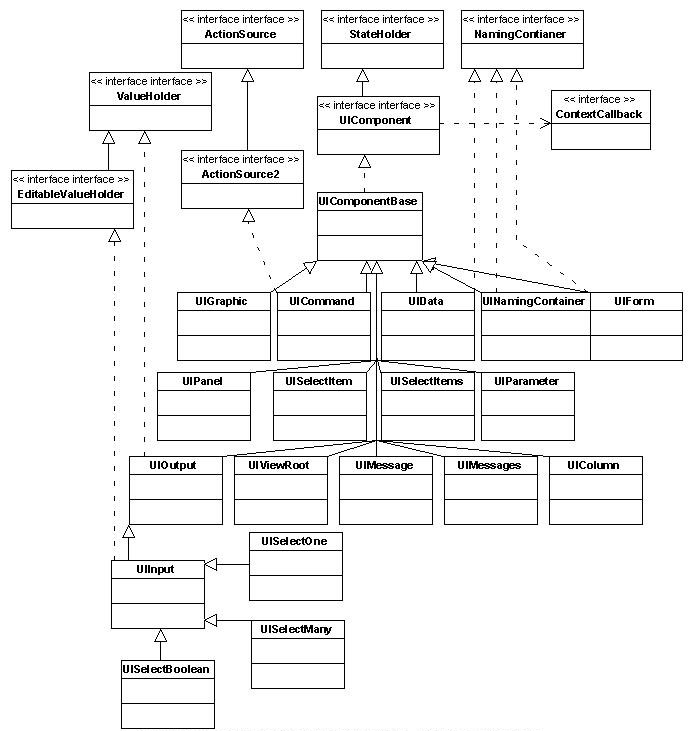

| Interface | Description |
|---|---|
| ActionSource |
ActionSource is an interface that may be implemented
by any concrete
UIComponent that wishes to be a source of
ActionEvents, including the ability to invoke application
actions via the default ActionListener mechanism. |
| ActionSource2 |
ActionSource2 extends
ActionSource and
provides a JavaBeans property analogous to the "action"
property on ActionSource. |
| ContextCallback |
A simple callback interace that enables taking action on a
specific UIComponent (either facet or child) in the view while
preserving any contextual state for that component instance in the
view.
|
| EditableValueHolder |
EditableValueHolder is an
extension of ValueHolder that describes additional features supported
by editable components, including
ValueChangeEvents and
Validators. |
| NamingContainer |
NamingContainer is an
interface that must be
implemented by any
UIComponent that wants to be a naming
container. |
| PartialStateHolder |
Components that want to leverage the
partial state saving feature must implement this interface instead of
implementing |
| StateHelper |
Define a |
| StateHolder |
This interface is
implemented by classes that need to save their state between
requests.
|
| TransientStateHelper |
Define a |
| TransientStateHolder |
This interface is implemented by classes that need to save state that is expected to be available only within the scope of the current request. |
| UniqueIdVendor |
UniqueIdVendor is an
interface implemented by |
| ValueHolder |
ValueHolder is an
interface that may be implemented by any concrete
UIComponent
that wishes to support a local value, as well as access data in the
model tier via a value expression, and support conversion
between String and the model tier data's native data type. |
| Class | Description |
|---|---|
| UIColumn |
UIColumn is a
UIComponent that represents
a single column of data within a parent UIData component. |
| UICommand |
UICommand is a
UIComponent that represents
a user interface component which, when activated by the user, triggers
an application specific "command" or "action". |
| UIComponent |
UIComponent is the base class for all
user interface components in JavaServer Faces.
|
| UIComponentBase |
UIComponentBase is a
convenience base class that implements the default concrete behavior
of all methods defined by
UIComponent. |
| UIData |
UIData is a
UIComponent that
supports data binding to a collection of data objects represented by
a DataModel instance, which is the current value of this
component itself (typically established via a ValueExpression). |
| UIForm |
UIForm is a
UIComponent that represents an input form to be presented to the
user, and whose child components represent (among other things) the
input fields to be included when the form is submitted. |
| UIGraphic |
UIGraphic is a
UIComponent that displays
a graphical image to the user. |
| UIImportConstants |
|
| UIInput |
UIInput is a
UIComponent that represents a component that both displays output to
the user (like UIOutput components do) and processes request
parameters on the subsequent request that need to be decoded. |
| UIMessage |
This component is
responsible for displaying messages for a specific
UIComponent, identified by a clientId or component id relative to the
closest ancestor NamingContainer. |
| UIMessages |
The renderer for this component is responsible for obtaining the
messages from the
FacesContext and displaying them to the
user. |
| UINamingContainer |
UINamingContainer is a
convenience base class for components that wish to implement
NamingContainer functionality. |
| UIOutcomeTarget |
This
component is paired with the
|
| UIOutput |
UIOutput is a
UIComponent that has a value, optionally retrieved from a
model tier bean via a value expression, that is displayed to the
user. |
| UIPanel |
UIPanel is a
UIComponent that manages the
layout of its child components. |
| UIParameter |
UIParameter is a
UIComponent that represents
an optionally named configuration parameter for a parent component. |
| UISelectBoolean | |
| UISelectItem |
UISelectItem is a component that
may be nested inside a
UISelectMany or UISelectOne
component, and causes the addition of a SelectItem instance
to the list of available options for the parent component. |
| UISelectItems |
UISelectItems is a component that may be nested
inside a
UISelectMany or UISelectOne component, and
causes the addition of one or more SelectItem instances to the
list of available options in the parent component. |
| UISelectMany |
UISelectMany is a
UIComponent that represents the user's choice of a zero or
more items from among a discrete set of available options. |
| UISelectOne |
UISelectOne is a
UIComponent that represents the user's choice of zero or one
items from among a discrete set of available options. |
| UIViewAction |
UIViewAction represents a method invocation that occurs during the request processing lifecycle, usually in response to an initial request, as opposed to a postback. |
| UIViewParameter |
UIViewParameter represents a
binding between a request parameter and a model property or |
| UIViewParameter.Reference |
Inner class to encapsulate a
|
| UIViewRoot |
UIViewRoot
is the UIComponent that represents the root of the UIComponent tree.
|
| UIWebsocket |
The |
| Exception | Description |
|---|---|
| UpdateModelException |
This exception indicates a failure to
update the model and is created to wrap any exception
that occurs during |
| Annotation Type | Description |
|---|---|
| FacesComponent |
The presence of this annotation
on a class that extends
UIComponent must cause the runtime to
register this class as a component suitable for inclusion in a view. |
Fundamental APIs for user interface components.
For your convenience here is a UML class diagram of the classes in this package.
Copyright © 1996-2017, Oracle and/or its affiliates. All Rights Reserved. Use is subject to license terms.